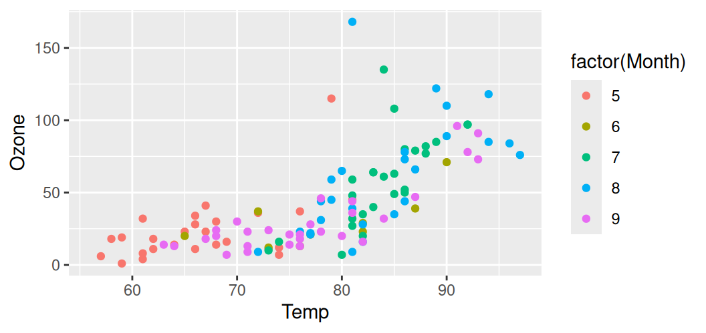
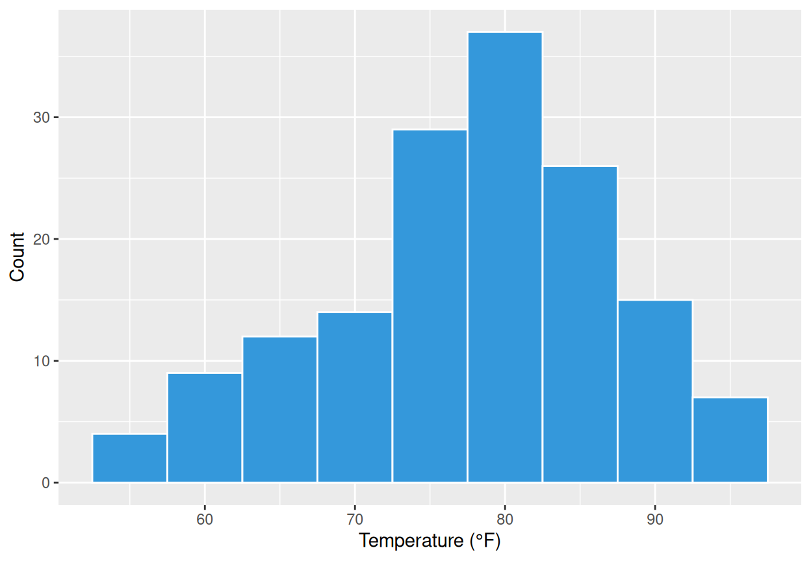
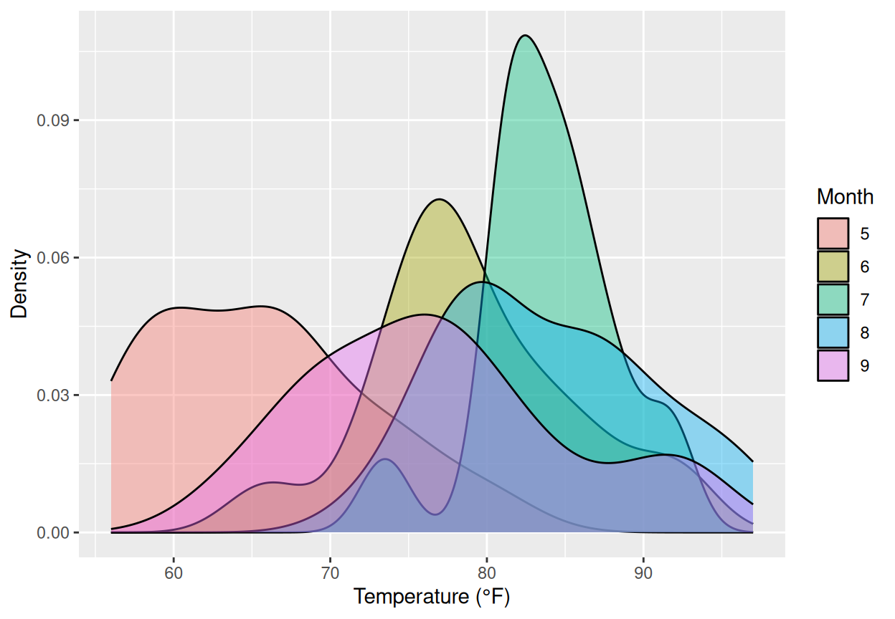
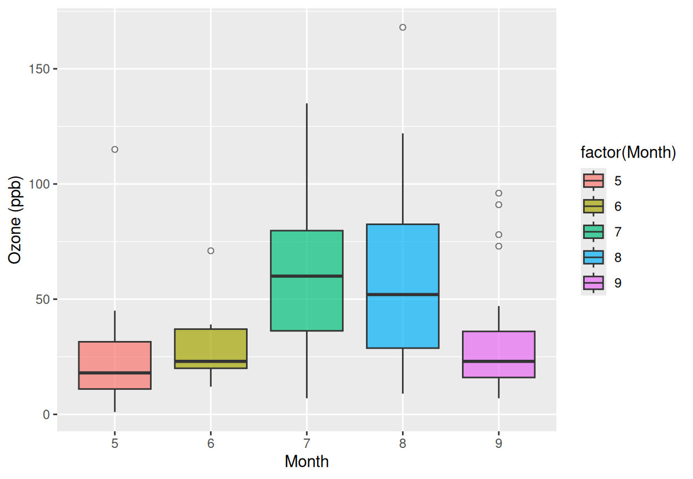
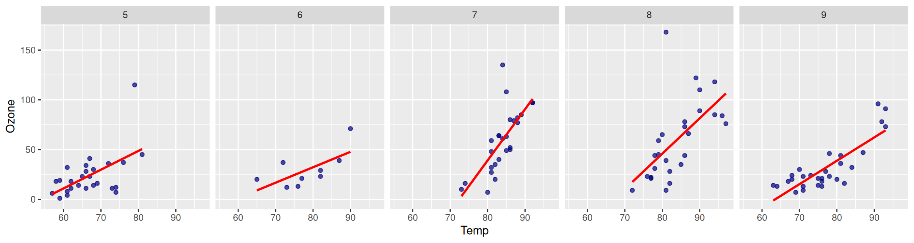
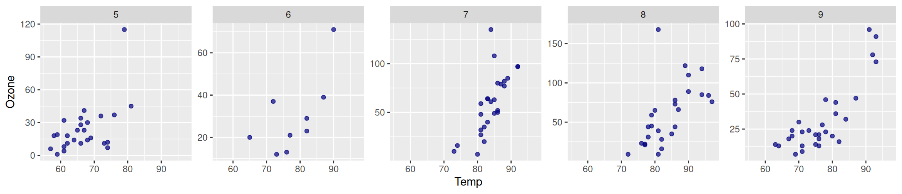
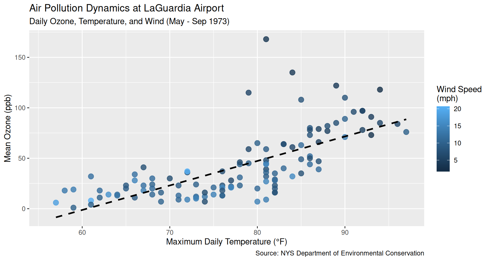
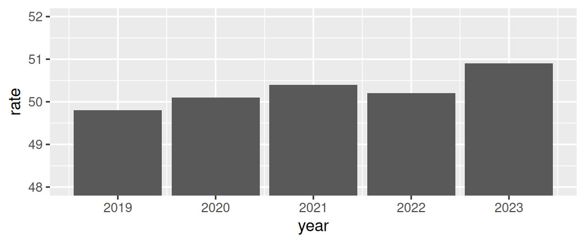

# Color varies by Month
p + geom_point(aes(color = factor(Month)))
GPH-GU 2182: Statistical Programming in R · Fall 2026
New York University · School of Global Public Health
2026-09-23
ggplot2 visualization).👥 Today’s Roles
ggplot2?Created by Hadley Wickham based on Leland Wilkinson's The Grammar of Graphics.
+.ggplot2plot())ggplot2 (library(ggplot2))p <- ggplot(...)).\[\text{Plot} = \text{Data} + \text{Aesthetic Mappings} + \text{Geometric Layers}\]
data.frame or tibble.aes()): Visual channels (\(x\), \(y\), color, size, shape, alpha).geom_*()): Visual representation (points, lines, bars, boxes).aes()Connects a visual channel to a variable in your data:
Tip
Never put a fixed value inside aes(): aes(color = "blue") makes R treat "blue" as a one-level factor.
In your week-04-inclass.qmd worksheet:
airquality dataset.Solar.R, \(x\)) vs Ozone (Ozone, \(y\)).Wind) to the color aesthetic.alpha = 0.7 and size = 3 (outside aes).geom_smooth(method = "loess", color = "darkblue").geom_histogram)Visualizing a single continuous variable:

binwidth values to avoid hiding peaks or creating artificial noise.geom_density)Smooth probability density estimates:

alpha = 0.4 so overlapping sub-populations remain visible.geom_boxplot)Comparing distributions across categorical groups:

geom_jitter)Layering raw observations over boxplots reveals sample sizes and local clusters:
outlier.shape = NA on the boxplot to prevent plotting outliers twice!geom_bar vs. geom_colgeom_bar() (Counts Rows)When R calculates frequency for you:
In week-04-inclass.qmd:
Ozone across Months (x = factor(Month), y = Ozone).factor(Month) with alpha = 0.5.width = 0.2, fill = "white") inside each violin.Layer order matters! Put geom_violin() first, then geom_boxplot() on top so the boxplot sits cleanly inside the violin body.
facet_wrapSplit complex multi-group data into clean sub-panels:

nrow = 1 aligns all panels in a single horizontal strip.By default, all subplots share the exact same axis limits (scales = "fixed"). Use scales = "free_y" for independent y-axes, or scales = "free" for fully independent axes:

Note
Use fixed scales when comparing absolute quantities; use free scales when comparing internal distribution shapes.
In week-04-inclass.qmd:
Temp (\(x\)) vs Ozone (\(y\)) from airquality.alpha = 0.6.geom_smooth(method = "lm", color = "darkred")).Month into a single row (nrow = 1).Observe how the slope of the temperature-ozone relationship changes between early summer (May) and late summer (August)!
labs()Never leave raw column names on a presentation or report figure:
p_pub <- ggplot(airquality, aes(x = Temp, y = Ozone, color = Wind)) +
geom_point(size = 3, alpha = 0.8) +
geom_smooth(method = "lm", color = "black", linetype = "dashed", se = FALSE) +
labs(
title = "Air Pollution Dynamics at LaGuardia Airport",
subtitle = "Daily Ozone, Temperature, and Wind (May - Sep 1973)",
x = "Maximum Daily Temperature (°F)",
y = "Mean Ozone (ppb)",
color = "Wind Speed\n(mph)",
caption = "Source: NYS Department of Environmental Conservation"
)
p_publabs()
ggsave()Save vector or high-resolution raster images for publications and reports:

aes() + geom_*().facet_wrap().labs(), theme_minimal(), and viridis.dplyr & Pipes (filter, mutate, select, arrange).